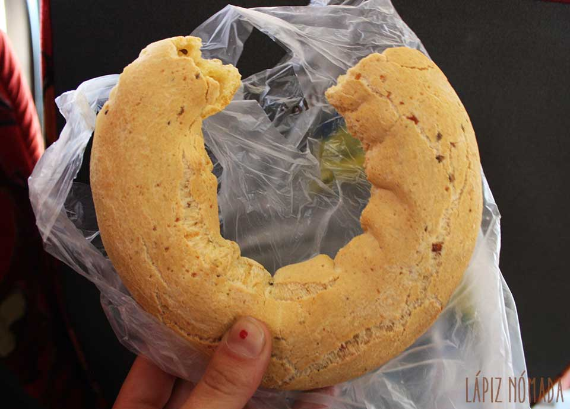

La chipa
30/08/2019 Asunción 
La chipa es algo muy típico y es frecuente escuchar alguna camioneta que va por los barrios vendiéndola. También pueden verse a las chiperas con sus canastas repletas de chipa sobre sus cabezas. La chipa se parece a un pan pequeño, solo que se elabora con almidón de mandioca, queso duro, leche, huevos, manteca y sal. En algunos casos también le añaden un poco de levadura, jugo de naranja o aceite de girasol.
¡Disfrútenlo!

Ruth: Un lujooo

Nico: Felicitaciones!!!
Jessica: muy rica la chipa